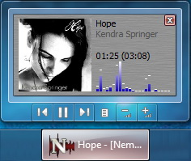

Letzte Abspielposition merken führt die Wiedergabe genau dort
fort, wo sie beim letzten Mal unterbrochen wurde.
Falls verfügbar: Wiedergabe mit neuer Datei beginnen
bewirkt, dass die Wiedergabe bei der Datei begonnen wird, die per
Doppelklick im Windows-Explorer das Starten von Nemp verursacht hat.
Wechsel zum neu eingefügten Titel (auch wenn gerade ein anderes
Lied gerade abgespielt wird) wechselt den Titel nach einem Doppelklick im Explorer auch dann, wenn Nemp bereits läuft und ein Stück abspielt.
Mehrere Instanzen erlauben: Normalerweise sollte Nemp nur einmal gestartet werden, nicht mehrmals.
Nemp Auto-Updater
Geben Sie an, ob und wenn ja wie oft Nemp nach Updates suchen soll, und
ob Sie auch bei neuen Beta-Versionen benachrichtigt werden wollen.
Dateitypen-Registrierung
Registrieren Sie Nemp als Standard-Player für Musikdateien und
Playlist-Formate, und geben Sie an, ob Dateien standardmäßig
in die Playlist eingefügt werden sollen, oder ob die vorherige
Playlist gelöscht werden soll.
Steuerung
Legen Sie das Verhalten von Multimediatasten fest und setzen Sie auf Wunsch globale Hotkeys für die Steuerung von Nemp.
Taskleiste und Tray
Die Windows7-Buttons funktionieren nur dann, wenn Nemp ständig in
der Taskleiste liegt. Unter Windows XP können Sie den
Taskleisteneintrag ohne Nebeneffekte ausblenden.

Das Deskband kann unter Windows XP installiert werden. Unter Windows 7
übernehmen die Taskbar-Buttons die Funktion des Deskbandes.